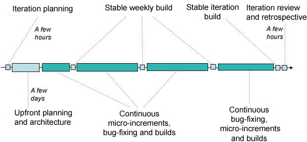

| Concept: Iteration Lifecycle |
 |
|
| Related Elements |
|---|
Iterations keep the team focused on delivering incremental customer value every few weeks by delivering a fully tested, demonstrable or shippable build (product increment). This creates a healthy focus on ensuring that whatever is worked on is of value to the stakeholders. Decision making must happen faster than in a process without iterations, because there is no time for endless debate. Iterative development focuses on producing working code, reducing the risk of analysis-paralysis. Frequent demonstration of working code provides feedback mechanisms that allow course corrections to be taken as needed. Iteration planning, estimation, and progress tracking are centered on work items. The iteration plan is created by selecting the top-priority work items. Agile estimation techniques are used to understand how many work items can safely fit within the time-boxed iteration, and work items are filtered to ensure that the chosen work items will allow the team to deliver upon iteration objectives agreed to by stakeholders. Progress is demonstrated through continuous completion of many small work items (see Micro-Increments). Just as a project goes through a lifecycle, iterations go through a lifecycle with a different focus for the team, depending on whether you are in the first or the last week of the iteration (see Figure 1 below). An iteration starts with an iteration planning meeting that is a few hours long. The initial one or two days are typically focused on further planning and architecture to, among other things, understand the dependencies and logical ordering of work items, and the architectural impacts of the work to be done. Most of the time during an iteration is spent on executing the micro increments. Each micro increment should deliver tested code to a build, as well as validated artifacts. To give additional discipline, stable builds are produced at the end of each week. More attention is spent on these builds to make sure that the quality is not eroding, and issues are dealt with early so that the success of the iteration isn't jeopardized. The last week or last few days of the iteration typically have a stronger emphasis on polishing and bug fixing than earlier weeks, even though new features are added as appropriate. The goal is to never let quality erode, thus ensuring that a high-quality useful product increment is produced at the end of the iteration. The iteration ends with an assessment (with stakeholders) of what was built, and a retrospective to understand how to improve the process for next iteration. Figure 1. An iteration goes through a lifecycle with a stronger focus on planning and architecture early on, and a stronger focus on bug fixing and stabilization toward the end.  Team members work more effectively if they can influence what they do and how they do it, rather than operating in an environment where they are told what to do. Giving the team the ability and responsibility to organize their work and determine how to best meet their commitments motivates team members to do their best. This also helps them collaborate to ensure that the right skills are applied to the appropriate tasks. Self-organization impacts many areas, including how planning and commitments are made (by a team, not by individuals), how work is assigned (you sign up rather than get assigned), and how team members view their roles in the project (team member first, job function second). Self-organization requires a few things to work:
|
This program and the accompanying materials are made available under the |